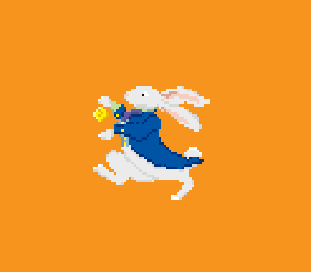

Pixel Art
This environment art is a personal side project I recently started. I plan to create more scenes and expand this collection over time.
One of the first pixel artworks I created. The image is only 48 pixels in total, which made it quite the challenge to capture all the necessary details.
Below are finalized pixel art pieces for an upcoming game I'm working on called "A Warrior's Recipe."
Textures
I didn't model the Funko myself, but I textured it entirely on my own. Since the model itself had a low level of detail, the texture needed to stand out with enough shading and refinement.
I modeled and textured Volarix entirely on my own, inspired by my professor. His muscles needed careful shading for definition, and the veins on his head required precise line work to stand out.
The models were not created by me, but I crafted all of their textures. The game’s theme had a goofy aesthetic—so the textures feature low to medium levels of shading and detail.
This is a playthrough of the game that features the models shown above. I created all the art Assets myself, with textures designed to maintain a low level of detail
2D Art: UI & Characters
I created the character select screen and start menu for a group project called "Treat Racer." The game was meant to be goofy, and I aimed to reflect that energy in my work.
This is the main character of my game "Raccoon Raid." I created him from scratch and designed his sprite sheet.
This Loki painting was created in Photoshop after the Funko Pop model; my goal was to achieve a high level of detail.
This is the start screen for a game I'm working on called GMU Drift. I wanted the background to be plain enough for the two race car drivers to stand out in the front.
2D Art: Illustrations
This is an animated short I created from scratch. I wanted the overall color palette to feature soft purple and blue tones with a cohesive aesthetic.